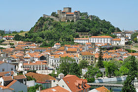

Leiria é uma cidade portuguesa, capital do distrito de Leiria, situada na região Centro e sub-região do Pinhal Litoral, com cerca de 50 000 habitantes no seu perímetro urbano. É sede de um município com 565,09 km² de área e 126 897 habitantes (2011) subdividido em 18 freguesias, o que faz dele o segundo concelho mais populoso das Beiras, só superado por Coimbra. É limitado a norte/nordeste pelo concelho de Pombal, a leste pelo de Ourém, a sul pelos municípios de Batalha e Porto de Mós, a sudoeste pelo de Alcobaça, a oeste pelo concelho da Marinha Grande e a noroeste pelo Oceano Atlântico.
Leiria é o principal centro urbano da unidade estatística Pinhal Litoral e da comunidade urbana de Leiria, assim como um importante centro de comércio, serviços e indústria. O município tem uma faixa costeira a ocidente, que a liga ao Oceano Atlântico. O feriado municipal é a 22 de maio e celebra a criação da diocese de Leiria, em 1545. A sua elevação a cidade ocorreu no dia 13 de Junho do mesmo ano. A cidade é banhada pelos rios Lis e o seu afluente, o Lena, sendo o castelo de Leiria o seu monumento mais notável. O concelho recebeu o primeiro foral de D. Afonso Henriques, o primeiro rei de Portugal, em 1142, sob o nome de Leirena. Foi uma das cidades escolhidas para fazer parte do Euro 2004, e graças a isso o seu estádio municipal sofreu uma grande remodelação, que ainda hoje está a ser paga pelo município e o endividou profundamente (pelo menos durante duas décadas).
Com uma gastronomia variada e com tradições reconhecidas, o concelho é historicamente rico, como o testemunham o castelo da cidade e o Santuário de Nossa Senhora da Encarnação. Leiria dispõe ainda, dentro do município, das Termas de Monte Real, de praias como a do Pedrógão, da Lagoa da Ervideira e da mata municipal de Marrazes. Ficam relativamente perto as históricas cidades de Ourém, Fátima, Pombal e Coimbra bem como a estância balnear da Figueira da Foz, uma das principais da região. Outros centros urbanos como o Entroncamento, Tomar, Torres Novas e Rio Maior, já no Ribatejo, estão bastante próximos. Os portos da Figueira da Foz e de Peniche distam cerca de 50 km e 80 km, respectivamente.
